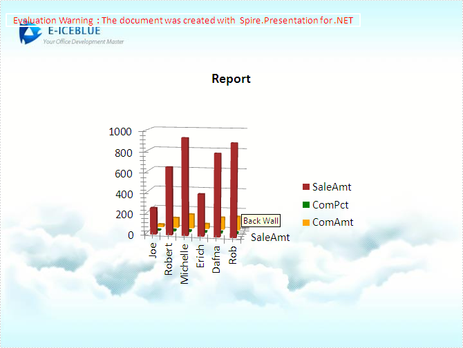

This is a C # example to manage PowerPoint document via a Free C# presentation slides library. And the code gives you clear information of how to inert chart to PowerPoint documents in C#.
Spire.Presentation for .NET is a reliable .NET PowerPoint component, which enables you to generate, read, edit, convert even print your PPT documents without installing Microsoft PowerPoint on your machine. Using Spire.Presentation for .NET, you also can insert charts in your PowerPoint document with C#. Spire.Presentation supports column charts, cylinder charts, cone charts, pyramid charts, clustered charts, line charts, pie charts, bar charts, area charts, scatter charts, stock charts, surface charts, contour charts, doughnut charts, bubble charts and radar charts.
Effective Screenshot:

As an independent PowerPoint .NET component, Spire.Presentation for .NET doesn't need Microsoft PowerPoint installed on the machine. And it is compatible with other .NET applications.
By using Spire.Presentation for .NET, developers can export presentation slides to PDF and image (Bitmap, JPG, PNG, EMF, TIFF, GIF and WMF) formats. It supports SmartArt shapre, MSO Charts components and presentation printing.
Spire.Presentation for .NET supports Microsoft PowerPoint 97 - 2003 and Microsoft PowerPoint 2007, 2010.PPT, PPS, PPTX, PPSX.
By using Spire.Presentation, developers can build any type of a 32-bit or 64-bit .NET application including C#, VB.NET, ASP.NET, Web Services and WinForms for .NET Framework version from 2.0 to 4.5.
How to Download and Install Spire.Presentation
Download Spire.Presentation for .NET here and you can get a zip package named Spire.Presentation for .NET Version:2.0. Extract this package and get the .msi file. Double click this file and install it to the specified path on your system.
How to Use DLLS
Users need to add dll files in project as reference to perform Spire.Presentation for .NET to compile.
There are several folders, which save dlls for different .NET Framework version under Bin directory. After creating a project, right click project name → Add Reference → Browse → Spire.Presentation folder → Bin → .NET 2.0/3.5/4.0/4.5/4.0
ClientProfile → Spire.Presentation.dll.
How to Run Demos
After installing, the sample projects for C#, VB.NET are put in respective folders: CS and VB. Choose one folder and run sample project in it.
There are two methods to run demos:
• Open the appropriate solution file (.sln) to get all projects this package has. To run the specified project, right click project name (for example Edit) → Debug → Start new instance. And then the result will be shown.
• Open Demos folder → WinForms folder → Specified directory (for example Quick Guide) → Specified Project folder (for example Edit) → Open appropriate project (.csproj) → Debug → Start Debugging or Press
F5.
Related Links:
Website: http://www.e-iceblue.com/
Product Home: http://www.e-iceblue.com/Introduce/free-presentation-component.html
Download: http://www.e-iceblue.com/Download/download-presentation-for-net-now.html
Forum: http://www.e-iceblue.com/forum/spire-presentation-f14.html